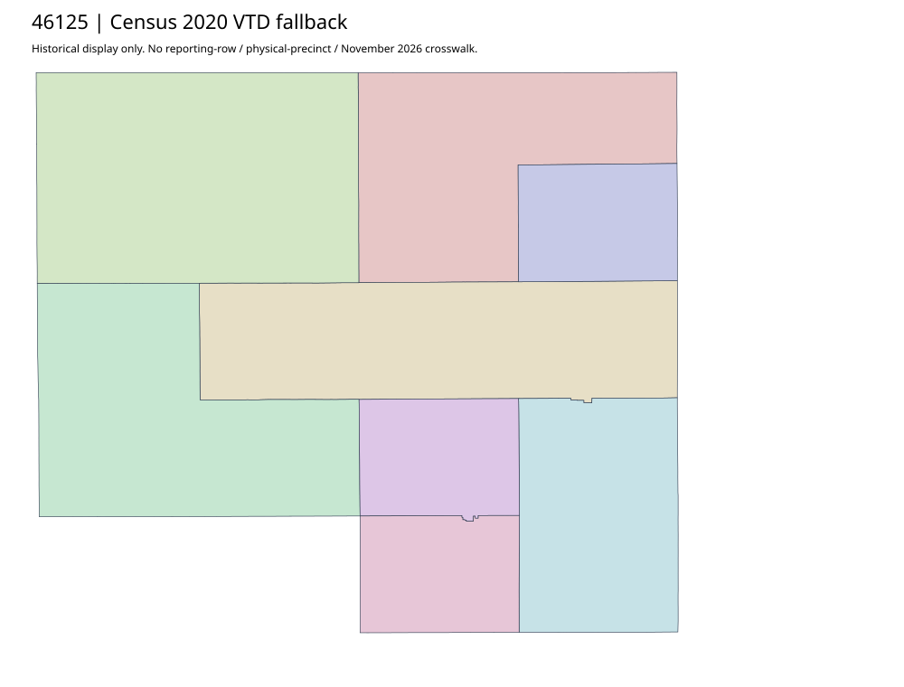

304 ordered indexTurner | 46125
Official Auditor parent acquired and inspected; followed document is election-worker information, not a map. No actual current precinct original located in bounded parent chain. Census2020 fallback retained; no inferred split of native labels, absentee coverage or current joins.
6 priority / 8 full historical observations. Parent is a summary ancestor, not additive to leaves. No physical feature matches or current reporting crosswalk approved.
Acquired shared-parent assets
No complete county precinct-map original acquired from this bounded chain. Use qualified fallback; roster/landing/error bodies are retained as evidence.
Census2020 fallback
8 native historical VTD features. Entire785-feature ZIP original retained once, all66 counties. Yankton has one countywide VTD. No current/reporting allocation. complete original gzip

Full binary/attribute/geometry QA
Observed authority/acquisition routes
Complete SOS authority fields including original blank/masked values: parent inventory. No contacts were sent.
Ordered full children
- Precinct-01 | 895 source votes | priority
- Precinct-02 | 860 source votes | priority
- Precinct-08 | 605 source votes | priority
- Precinct-06 | 594 source votes | priority
- Precinct-03 | 572 source votes | priority
- Precinct-05 | 476 source votes | priority
- Precinct-04 | 328 source votes | remainder
- Precinct-07 | 208 source votes | remainder